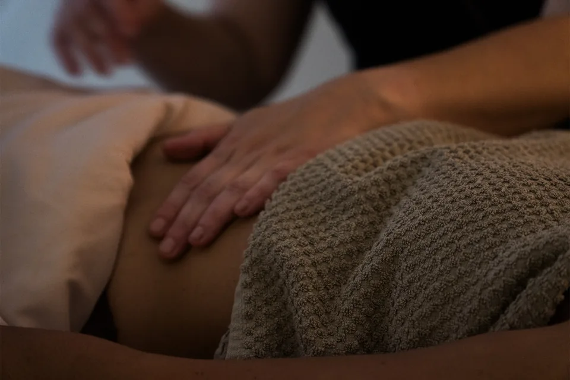

Gestes enveloppants, pressions ciblées
Ce protocole n'est pas pensé comme un simple moment de détente, mais comme une récupération pour le corps et le système nerveux. Inspiré du massage suédois et affiné par Élisabeth Nado, il associe gestes enveloppants, pressions ciblées et étirements doux pour aider le corps à relâcher ce qu'il retient.
Plus qu'une pause agréable, c'est un soin qui cherche à aider votre corps à vraiment redescendre. Il convient particulièrement aux périodes de surmenage, de fatigue nerveuse ou de rythme de vie trop intense.
Formée et certifiée par Élisabeth Nado, je suis la première praticienne certifiée Méthode Nado® en région toulousaine, et certifiée au Soin Gestion du Stress, comme l'indique l'annuaire des praticiennes du site d'Élisabeth Nado. Comme les autres soins du cabinet, c'est un soin de bien-être, non médical.
Pourquoi ce soin compte pour moi →
Quand le corps ne redescend plus
L'Apaisement s'adresse à toute personne qui a besoin d'une vraie coupure. Pas de performance à atteindre : un cocon pour souffler.
Surmenage
Les semaines où tout s'enchaîne, où l'on tient sur les nerfs et où le corps finit par le dire.
Fatigue nerveuse
Une fatigue qui n'est pas seulement physique, une tête qui ne s'arrête plus.
Tensions du quotidien
Épaules serrées, nuque raide, un corps qui garde la trace des journées chargées.
Un temps pour soi
L'envie de s'accorder 1h10 sans rien avoir à faire, dans un espace calme, à votre rythme.
L'Apaisement
Massage Gestion du Stress Méthode Nado®, au cabinet de Muret.
Réservation en ligne 24h/24 sur Planity. Comme pour les autres soins du cabinet, ce massage n'est pas proposé aux femmes enceintes.
Réserver L'Apaisement — 100 €Massage anti-stress ou drainage lymphatique ?
Deux soins de la Méthode Nado®, deux intentions : relâcher les tensions et le stress, ou accompagner les jambes lourdes et la rétention d'eau.
L'Apaisement
- Gestes enveloppants, pressions ciblées, étirements doux
- Pensé pour la récupération du corps et du système nerveux
- Peut se prendre seul : 1h10, sans séance Initiale préalable
- 100 €
Le drainage lymphatique
- Pressions très légères, juste sous la peau
- Accompagne la circulation lymphatique : jambes lourdes, rétention d'eau
- Un accompagnement de plusieurs séances, qui commence par L'Initiale (1h45)
- À partir de 160 €
Le massage anti-stress, vos questions
L'Apaisement est un massage Méthode Nado® de 1h10, inspiré du massage suédois. Il associe gestes enveloppants, pressions ciblées et étirements doux pour aider le corps à relâcher ce qu'il retient. Il est pensé comme une récupération pour le corps et le système nerveux.
Non. L'Apaisement est accessible sans séance Initiale préalable : vous pouvez le réserver directement en ligne.
Il s'en inspire, mais il fait partie de la Méthode Nado® : le protocole a été affiné par Élisabeth Nado, et je suis certifiée à ce soin.
L'Apaisement coûte 100 € pour 1h10. Ce soin de bien-être n'est pas remboursé par la Sécurité sociale ; certaines mutuelles remboursent des soins de bien-être, renseignez-vous auprès de la vôtre. Une facture peut être fournie sur demande.
Au cabinet de Muret, au 23 avenue du Président Vincent Auriol : environ 25 km, soit une demi-heure en voiture hors heures de pointe depuis le centre de Toulouse. Accès facilité PMR, stationnement à proximité.
Non. Comme pour les autres soins du cabinet, ce massage n'est pas proposé aux femmes enceintes. En cas de doute sur votre situation, contactez-moi avant de réserver.
1h10 pour redescendre
Sans séance préalable, sans engagement : réservez L'Apaisement en ligne, au créneau qui vous convient.